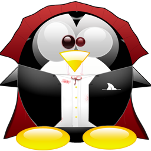
El Conde Drácula es el personaje principal de la novela gótica de terror Drácula, escrita por Bram Stoker en 1897. Se le considera el prototipo y arquetipo del vampiro en obras de ficción posteriores. En la novela también se le describe como el origen de las leyendas sobre los hombres lobo. Se cree que algunos aspectos del personaje se inspiraron en un príncipe de Valaquia del siglo XV: Vlad el Empalador.
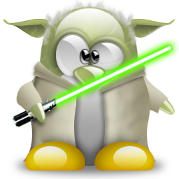
Yoda es un personaje ficticio del universo Star Wars, que apareció por primera vez en la película El Imperio contraataca, de 1980. Es un pequeño alienígena humanoide verde con un gran poder en la Fuerza y uno de los principales miembros de la Orden Jedi hasta su casi aniquilación. Yoda es una figura icónica de la cultura popular debido a su peculiar forma de hablar y a su papel como sabio mentor.
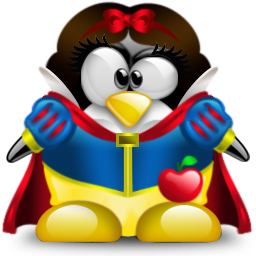
Blancanieves es un personaje ficticio y protagonista de la primera película animada de Walt Disney Productions, Blancanieves y los siete enanitos (1937). El personaje de Blancanieves se inspiró en un cuento de hadas conocido en muchos países de Europa, cuya versión más famosa es la recopilada por los hermanos Grimm. Blancanieves es la primera princesa Disney.
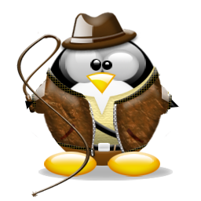
El Dr. Henry Walton "Indiana" Jones, Jr. es el personaje principal y protagonista de la franquicia Indiana Jones. George Lucas creó el personaje en homenaje a los héroes de acción de las series cinematográficas de la década de 1930. El personaje apareció por primera vez en la película de 1981 En busca del arca perdida, a la que siguieron Indiana Jones y el templo maldito en 1984, Indiana Jones y la última cruzada en 1989, Las aventuras del joven Indiana Jones de 1992 a 1996 e Indiana Jones y el Reino de la Calavera de Cristal en 2008.
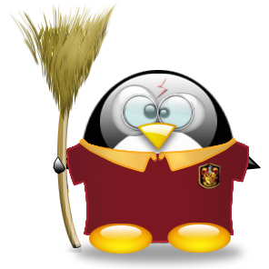
Harry Potter es un personaje ficticio y el protagonista principal de la serie de novelas homónimas de J. K. Rowling. La mayor parte de la trama de los libros abarca siete años de la vida del huérfano Harry, quien, en su undécimo cumpleaños, descubre que es mago. Así, asiste al Colegio Hogwarts de Magia y Hechicería para practicar magia bajo la tutela del amable director Albus Dumbledore y otros profesores del colegio, junto con sus mejores amigos Ron Weasley y Hermione Granger.
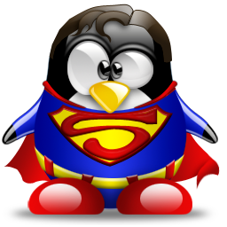
Superman es un superhéroe ficticio que apareció por primera vez en los cómics estadounidenses publicados por DC Comics. El personaje fue creado por el escritor Jerry Siegel y el artista Joe Shuster. Superman nació en el planeta Krypton y recibió el nombre de Kal-El al nacer. Cuando era un bebé, sus padres lo enviaron a la Tierra en una pequeña nave espacial momentos antes de que Krypton fuera destruido por un cataclismo natural. Su nave aterrizó en la campiña estadounidense. Fue encontrado y adoptado por los granjeros Jonathan y Martha Kent, quienes lo llamaron Clark Kent. Clark desarrolló varias habilidades sobrehumanas, como una fuerza increíble y una piel impenetrable.
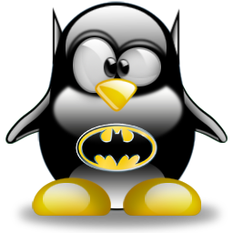
Batman es un superhéroe que aparece en los cómics estadounidenses publicados por DC Comics. Batman fue creado por el artista Bob Kane y el escritor Bill Finger. Batman es el alias de Bruce Wayne, un rico playboy estadounidense, filántropo y propietario de Wayne Enterprises, con sede en Gotham City. La historia del origen de Batman lo presenta jurando venganza contra los criminales después de presenciar el asesinato de sus padres Thomas y Martha; se entrena física e intelectualmente, crea un personaje inspirado en los murciélagos y vigila las calles de Gotham por la noche.
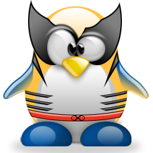
Wolverine (nombre real: James Howlett; alias: Logan) es un personaje ficticio que aparece en los cómics estadounidenses publicados por Marvel Comics, principalmente en relación con los X-Men. Es un mutante que posee sentidos agudos como los de los animales, capacidades físicas mejoradas, una poderosa capacidad regenerativa conocida como factor curativo y tres garras retráctiles en cada mano. Wolverine ha sido representado de diversas maneras como miembro de los X-Men, X-Force, Alpha Flight, los Cuatro Fantásticos y los Vengadores. Fue creado por el editor jefe de Marvel, Roy Thomas, el escritor Len Wein y el director artístico de Marvel, John Romita Sr.
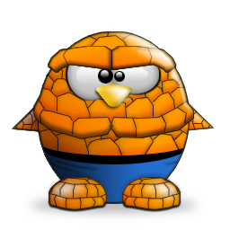
La Cosa (Ben Grimm) es un superhéroe ficticio que aparece en los cómics estadounidenses publicados por Marvel Comics. El personaje es uno de los miembros fundadores de los Cuatro Fantásticos. La Cosa fue creado por el escritor y editor Stan Lee y el dibujante Jack Kirby. El personaje es conocido por su característica apariencia rocosa, su sentido del humor y su famoso grito de guerra: "¡Es hora de las tortas!". El principal poder sobrehumano de La Cosa es su gran fuerza física. A lo largo de los años, como resultado de nuevas mutaciones y un riguroso entrenamiento con máquinas diseñadas por Reed Richards (Mr. Fantástico), su fuerza ha aumentado de forma espectacular.
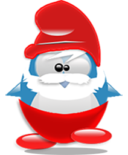
Papá Pitufo es uno de los protagonistas de la tira cómica Los Pitufos. Se dice que la mayoría de los Pitufos tienen unos 100 años, pero con la avanzada edad de 546 años, Papá es el Pitufo más viejo y el líder de todos los Pitufos. A pesar de su edad, sigue siendo bastante enérgico. Fácilmente distinguible de todos los demás Pitufos, Papá Pitufo tiene un bigote y una barba blancos y tupidos, y suele vestir pantalones rojos y un gorro frigio rojo a juego, lo que lo convierte en el único Pitufo que no viste de blanco. Apareció por primera vez en la historia de Johan y Peewit de Peyo de 1958, "La Flûte à Six Trous", la primera aparición de los Pitufos.
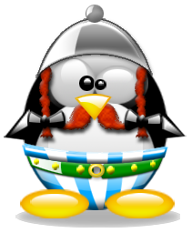
Obelix es un personaje de dibujos animados de la serie francesa de cómics Astérix. Trabaja como escultor de menhires y repartidor, y es el mejor amigo de Astérix. Obelix destaca por su gordura, los menhires que lleva a cuestas y su fuerza sobrehumana. Cuando era un bebé, cayó en un caldero con la poción mágica de los galos, lo que le convirtió en el único galo de la aldea de Astérix que tiene una fuerza sobrehumana permanente. Debido a esta fuerza ya de por sí enorme, a Obélix no se le permite volver a beber la poción mágica, una prohibición que él considera tremendamente injusta.
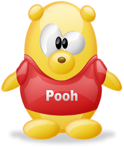
Winnie-the-Pooh,es un osito de peluche antropomórfico ficticio creado por el autor inglés A. A. Milne y el ilustrador inglés E. H. Shepard. Pooh es ingenuo y torpe, pero también es amistoso, reflexivo y constante. Aunque él y sus amigos coinciden en que es "un oso con muy poco cerebro", en ocasiones se reconoce que Pooh tiene ideas inteligentes, normalmente impulsadas por el sentido común. A Pooh le encanta la comida, especialmente la «miel», pero también la leche condensada y otros alimentos. Pooh es muy sociable. Después de Christopher Robin, su mejor amigo es Piglet.
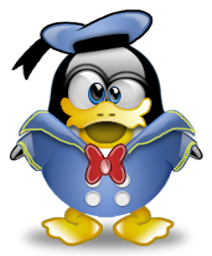
El pato Donald (Donald Duck en la versión original) es un personaje de dibujos animados creado por The Walt Disney Company. Donald es un pato antropomórfico blanco con el pico, las patas y los pies de color naranja. Suele llevar una camisa de marinero y una gorra con pajarita. Donald es conocido por su habla semiinteligible y su personalidad traviesa, temperamental y pomposa. Junto con su amigo Mickey Mouse, Donald fue incluido en la lista de TV Guide de los 50 mejores personajes de dibujos animados de todos los tiempos en 2002, y ha ganado una estrella en el Paseo de la Fama de Hollywood. Ha aparecido en más películas que cualquier otro personaje de Disney.